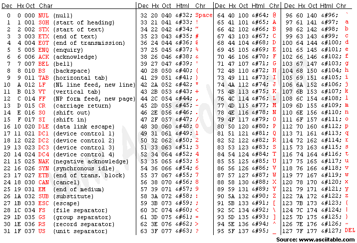

Objetivos:
- Que desarrolles la habilidad de manipular archivos de texto.
- Que ejercites la habilidad de
hacer frente a los mensajes de error que envía la
herramienta de desarrollo.

Forma de
trabajo:
Actividad individual

Tiempo estimado:
90 minutos
.

Ejercicios:
Construye un programa
completo en C libre de warnings y errores, que incluya las siguientes
funciones y /o procedimientos:
1.- El
procedimiento llamado escribirEnArchivo,
que pida al usuario 5 oraciones o frases de menos de 50 caracteres cada
frase y las guarde en un archivo de texto. Nombre del archivo:
frases.txt. El encabezado del procedimiento podría ser el siguiente:
void
escribirEnArchivo ( )
2.- La función
cuentaConsonantes, que regresa el
número de consonantes contenidas en un archivo de texto. Nombre del
archivo a utilizar: frases.txt. El encabezado
de la función podría ser la siguiente:
int
cuentaConsonantes ( )
3.- Se desea almacenar
en un archivo de texto los siguientes datos de los alumnos del curso
de Computación: nombre, carrera y calificación final con el siguiente
formato: Pedro IIS 95. 2. Implementa el procedimiento escribirConFormato, que pide al usuario los datos
que se desean almacenar y los escribe en un archivo de texto. Nombre
del archivo: calis.txt. El encabezado del procedimiento es el
siguiente:
void
escribirConFormato ( )
Recuerda que para este caso necesitas utilizar la funcion
fprintf(), revisa el documento de power point para recordar su sintaxis.
4.- El
procedimiento leerConFormato,
que lee los datos almacenados en el archivo de texto del ejercicio
anterior:
calis.txt. Recuerda que debe hacerse una lectura con formato. El
encabezado del procedimiento es el siguiente:
void
leerConFormato ( )
Recuerda que para este caso necesitas utilizar la funcion
fscanf(), revisa el documento de power point para recordar su sintaxis.
5.- El procedimiento
menu que despligue el siguiente menú en pantalla:
A. Escribir en archivo
B. Cuenta Consonantes
C. Guarda datos de alumnos
D. Muestra datos de alumnos
S. Salir
- Escribe el código necesario dentro del
main para desplegar
el menú y brindarle al usuario la oportunidad de ejecutar cualquiera
de las funciones y procedimientos que han sido construidos.
- Utilizando el
ciclo do-while cicle el programa hasta que el usuario seleccione
opción de Salir (S).
-
Guarda tu laboratorio con el nombre: K_Matrícula.c


Forma de
entrega:
- Formato de entrega: .c
- Nombre del entregable:
K_matrícula.c.
- Medio de entrega: Se entega en
Canvas en la sección de Laboratorio: Archivos
|